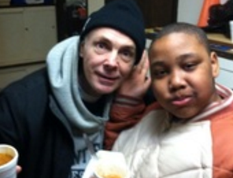

There are some stories in this life which just seem like they are right out of a movie; they are so removed from the majority of peoples experience that they just don't seem real. And perhaps even more amazing is that we certainly don't imagine them becoming key leaders in Christ's church. But in this 'real life' God still moves in 'movie-like' fashion, changing lives! This was certainly the case with Bill Curtis!
I met Bill nearly 8 years ago when we first started our ministry with CPC on Whitney Ave. He had been a Christian for nearly 2 years and was a faithful member of the congregation. You could always find Bill sitting in the same location every Sunday, but you would be hard pressed to see him any place else. Our conversations always centered around basketball and chess, but beyond that I didn't know Bill that well. However, once we started the work in the Hill community I was getting engaged weekly by Bill about how things were going 'in the Hill.' During one of these 'informational downloads', Bill mentioned that he would love to help in some way because he thought he could relate with where people were coming from in the community. Thus began my steep learning curve on Bill's upbringing and adult life, which not many folks knew about.
Bill was born and raised in New Haven, CT. He was the son of a World War II veteran, who had a very difficult time with alcohol abuse after the war. As a result, life in the Curtis household was very emotionally, physically, relationally, and financially unstable. It was not unusual for the rest of the family to without eating or being able to pay the bills for the home. As things deteriorated relationally with his father, resulting in getting kicked out of his home at 16 years of age, bill began his young life working very hard and using whatever means he could to establish a sense of stability in his life. These pursuits led Bill into 'organize crime' and very dangerous behavior; needless to say Bill's life had many of the resemblances of the stuff we see 'in the movies.' During this time, God had his hand on Bill's heart, leading him to study the bible, investigate other religions, and eventually giving him a life-changing encounter with Jesus. But as is the case with many young believers, transitioning from many of our idolatories and life-styles takes a great amount of grace, time, and effort.
Letting go of the bitterness towards his father and the lure of excitement that came with a life of 'questionable legality' had proven quite difficult over the past 10 years. The keys that unlocked the oppressive hold these areas had on his life were brutal honesty/openness with key brothers in the church, consistently sitting under the teaching of the Word of God, and beginning to bring his many gifts to bear in the body of Christ. Bit by bit, as Bill has maintained his connection to the life of Christ, via the Church, the Lord Jesus has continued to remove the obstacles that have been hindering his obedience and joy in the Lord. The Gospel has and continues to take Bill into vistas of living and service that he never thought possible. For example, before Bill started to attend CPC in the Hill, he never pursued opportunities to serve within the life of the church on Whitney Ave.; speaking honestly, Bill simply didn't think that he had anything to offer the folks of this highly educated communion. Bill stated it this way, "They didn't need anything that I had." Now of course, that was never stated, but the level of discontinuity between where Bill came from and where the majority of folks at Whitney were from, simply made his involvement seem irrelevant and unneeded in his mind. However, at CPC in the Hill, he found a community of people who he could relate to; people who shared common themes of his life experience. And as such, Bill now knew that what he had to share would be perceived as relevant and helpful to the saints in this church and neighborhood. In fact, in many ways, all that Bill had been through in his life had prepared him for such a time as this; to help plant a church in the inner city of New Haven.